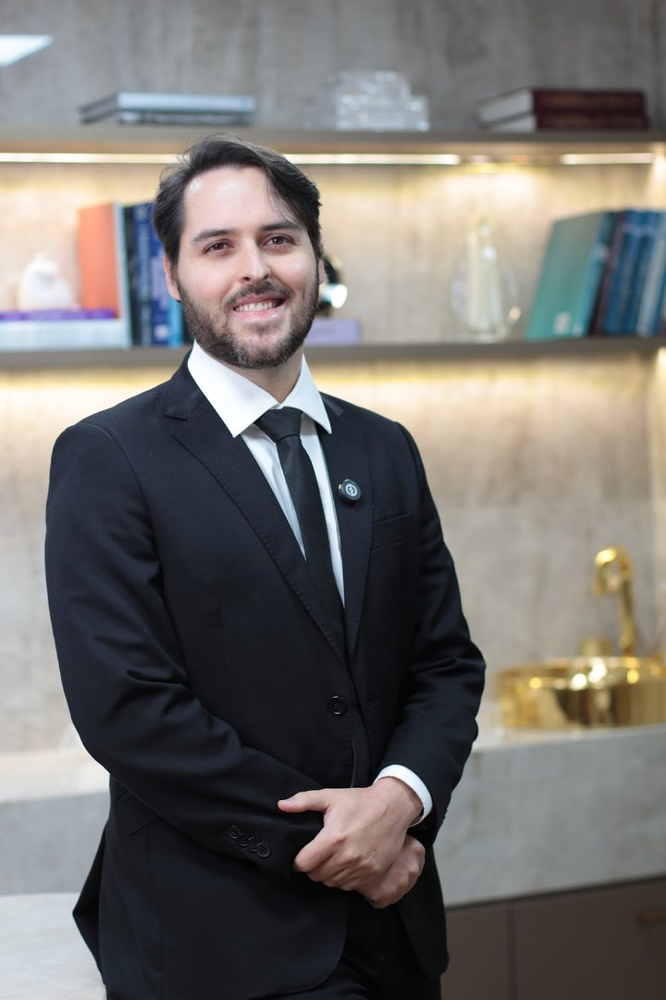
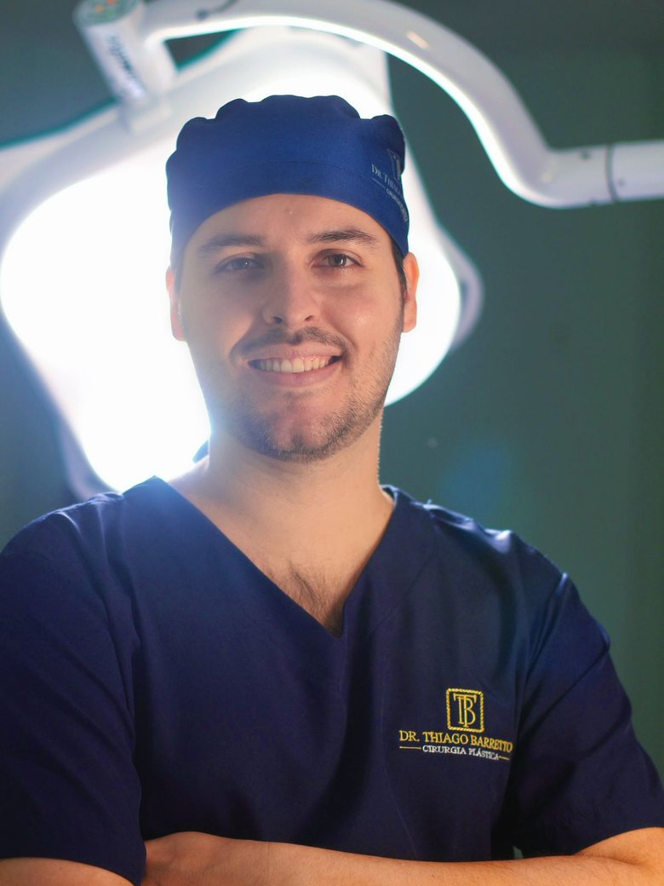

Início · Dr. Thiago
Dr. Thiago Barretto: UFBA, Irmã Dulce e HUPES.
Graduado pela Faculdade de Medicina da UFBA, com residência em Cirurgia Geral no Hospital Santo Antônio (Obras Sociais Irmã Dulce) e em Cirurgia Plástica no Hospital Universitário Professor Edgard Santos. Membro especialista da Sociedade Brasileira de Cirurgia Plástica.
Formação
Trajetória
“Médico graduado pela Faculdade de Medicina da Universidade Federal da Bahia - UFBA. Cirurgião Geral formado pelo Hospital Santo Antônio/Obras Sociais Irmã Dulce. Cirurgião Plástico formado pelo Hospital Universitário Professor Edgar Santos - HUPES.”Resumo do Dr. Thiago no currículo Lattes
- 2011–2017 · MedicinaUniversidade Federal da Bahia. Na graduação, participou da Liga Baiana de Cirurgia Plástica e foi membro fundador da Liga Acadêmica de Anatomia Clínico-cirúrgica (2013), além de monitor de Técnica Operatória (2014).
- 2018–2020 · Residência em Cirurgia GeralHospital Santo Antônio, das Obras Sociais Irmã Dulce.
- 2020–2023 · Residência em Cirurgia PlásticaHospital Universitário Professor Edgard Santos (HUPES), da UFBA.
- Desde 2023 · Hospital Estadual da MulherCirurgião plástico, pelo SUS.
- Hoje · SBCPMembro da Sociedade Brasileira de Cirurgia Plástica.
Datas do currículo Lattes, conferidas no histórico de vínculos do CNES.

Registro
Registro e sociedade
CRM-BA 31290 · RQE 23262
Os números do registro no Conselho Regional de Medicina da Bahia e do RQE, como ele assina as suas publicações.
Membro da SBCP
Categoria Associado (Membro Especialista) da Sociedade Brasileira de Cirurgia Plástica.
Cirurgião plástico no CNES
Cadastro Nacional de Estabelecimentos de Saúde, com o registro de médico cirurgião plástico.
Residência em Cirurgia Plástica
HUPES/UFBA, de 2020 a 2023, registrada no CNES e no currículo Lattes.
A condição de membro pode ser consultada na busca “Encontre um cirurgião”, da SBCP.
Ciência
Pesquisa
Na residência de Cirurgia Plástica, o Dr. Thiago fez a monografia com um ensaio clínico. Antes, na graduação, participou de pesquisas publicadas em revistas indexadas no PubMed.
O ácido tranexâmico é um medicamento usado para reduzir sangramento. O ensaio avaliou o uso tópico, aplicado no local da cirurgia, em cruroplastias, a cirurgia da parte interna das coxas.
Atuação
Atuação hoje
O Dr. Thiago atende com hora marcada no Caminho das Árvores, em Salvador, e atua como cirurgião plástico no Hospital Estadual da Mulher, pelo SUS. As cirurgias que ele apresenta nas redes:
- Mastopexia com e sem prótese
- Mamoplastia redutora
- Abdominoplastia e o corpo depois da gestação, com mamas e abdome no mesmo planejamento quando indicado
- Otoplastia
Valores
O jeito de atender
“A cirurgia plástica é uma combinação de técnica e empatia. É entender que por trás de cada decisão existe uma história, um sonho, uma confiança.”Dr. Thiago Barretto · Instagram, 29 de outubro de 2024
“Sua cirurgia só precisa fazer sentido para você, que decidiu com segurança e consciência, cuidar de algo que te incomodava há muito tempo.”Dr. Thiago Barretto · Instagram, 8 de setembro de 2026

Dúvidas frequentes
Perguntas comuns
O Dr. Thiago é cirurgião plástico?
Sim. Ele fez residência em Cirurgia Plástica no HUPES/UFBA (2020–2023), é membro da SBCP e assina CRM-BA 31290 · RQE 23262.
Onde ele se formou?
Na Faculdade de Medicina da UFBA, de 2011 a 2017. Depois, fez residência em Cirurgia Geral no Hospital Santo Antônio (Obras Sociais Irmã Dulce) e em Cirurgia Plástica no HUPES.
Agende
Comece por uma conversa honesta.
Atendimento com hora marcada no Caminho das Árvores, em Salvador. Fale com a equipe pelo WhatsApp.